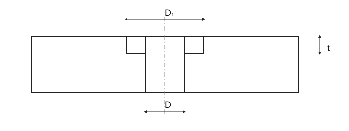

Counterbores, bearing surfaces and bolt holes
Historical source: numbers, exceptions and footnotes await complete standards verification.

Counterbores, bearing surfaces and bolt holes
| For screw | M1 | M1,2 | M1,6 | M2 | M2,5 | M3 | M4 | M5 | M6 | M8 | M10 |
|---|---|---|---|---|---|---|---|---|---|---|---|
| Fine series | D [mm] H12 | 1.1 | 1.3 | 1.7 | 2.2 | 2.7 | 3.2 | 4.3 | 5.3 | 6.4 | 8.4 | 10.5 |
| Medium series | D [mm] H13 | 1.2 | 1.4 | 1.8 | 2.4 | 2.9 | 3.4 | 4.5 | 5.5 | 6.6 | 9.0 | 11 |
| Coarse series | D [mm] H14 | 1.3 | 1.5 | 2.0 | 2.6 | 3.1 | 3.6 | 4.8 | 5.8 | 7.0 | 10 | 12 |
| z [mm] | 0.1 | — | 0.15 | — | — | 0.2 | 0.3 | — | — | 0.5 | — |
| d2 max [mm] | — | — | — | — | — | — | — | — | — | — | 11.7 |
| D2 [mm] H14 | — | — | — | — | — | — | 13 | 15 | 18 | 24 | 28 |
| D1 [mm] H15 | — | — | — | — | — | — | — | — | — | 18 | 22 |
| D3 [mm] H13 | 2.2 | 2.5 | 3.3 | 4.3 | 5 | 6 | 8 | 10 | 11 | — | — |
| D3 [mm] H14 | — | — | — | — | — | — | — | — | — | 15 | 18 |
| D4 [mm] H13 | 2.5 | 2.8 | 3.7 | 4.4 | 5.3 | 6.5 | 9.6 | 10.6 | 12.7 | 17.2 | 20.8 |
| D5 [mm] H12 | 2.1 | 2.4 | 3.3 | 4.0 | 4.9 | 5.7 | 8.7 | 9.6 | 11.7 | 16.2 | 18.8 |
| t1 min [mm] | — | — | — | — | — | — | 3.5 | 4.5 | 6 | 6.5 | 8 |
| t2 min [mm] | — | — | — | — | — | — | 5 | 6 | 8 | 10 | 12 |
| t2 max [mm] | — | — | — | — | — | — | 10 | 11 | 13 | 20 | 22 |
| t3 min [mm] | 0.8 | 0.9 | 1.2 | 1.6 | 2 | 2.4 | 3.2 | 4 | 4.5 | 6 | 7 |
| t4 min [mm] | — | — | — | — | — | — | 4.6 | 5.7 | 6.8 | 9 | 11 |
| t5 min [mm] | — | — | — | — | — | — | 5.8 | 7.2 | 8.3 | 11 | 13.5 |
| t6 [mm] | 0.7 | 0.75 | 1.0 | 1.1 | 1.3 | 1.7 | 2.7 | 2.7 | 3.2 | 4.4 | 5.15 |
| t7 [mm] | 0.2 | 0.2 | 0.2 | 0.2 | 0.2 | 0.4 | 0.45 | 0.45 | 0.5 | 0.5 | 1 |
Counterbores, bearing surfaces and bolt holes · 2 · M12 – M22
| For screw | M12 | M14 | M16 | M18 | M20 | M22 | M24 | M27 | M30 | M33 |
|---|---|---|---|---|---|---|---|---|---|---|
| Fine series | D [mm] H12 | 13 | 15 | 17 | 19 | 21 | 23 | 25 | 28 | 31 | 34 |
| Medium series | D [mm] H13 | 14 | 16 | 18 | 20 | 22 | 24 | 26 | 30 | 33 | 36 |
| Coarse series | D [mm] H14 | 15 | 17 | 19 | 21 | 24 | 26 | 30 | 33 | 36 | 39 |
| z [mm] | 1 | 1 | 1.2 | 1.2 | 1 | 1.2 | 1.6 | 1.6 | 1.6 | 1.8 |
| d2 max [mm] | 15 | 17 | 19 | 21 | 23 | — | 28 | — | 36 | — |
| D2 [mm] H14 | 34 | 36 | 40 | 43 | 48 | 53 | 57 | 60 | 68 | 75 |
| D1 [mm] H15 | 26 | 30 | 33 | 36 | 40 | 43 | 48 | 52 | 61 | 67 |
| D3 [mm] H13 | — | — | — | — | — | — | — | — | — | — |
| D3 [mm] H14 | 20 | 24 | 26 | 30 | 34 | — | 40 | — | 48 | — |
| D4 [mm] H13 | 24.5 | — | 31.5 | — | 39 | — | — | — | — | — |
| D5 [mm] H12 | 22.5 | — | 29.5 | — | 37 | — | — | — | — | — |
| t1 min [mm] | 9 | 10 | 11.5 | 13.5 | 14.5 | 15.5 | 16.5 | 18.5 | 21 | 23 |
| t2 min [mm] | 15 | 17 | 19 | 21 | 23 | 25 | 27 | 30 | 33 | 35 |
| t2 max [mm] | 25 | 27 | 29 | 31 | 33 | 35 | 37 | 40 | 43 | 45 |
| t3 min [mm] | 8 | 9 | 10.5 | 11.5 | 12.5 | — | — | — | — | — |
| t4 min [mm] | 13 | 15 | 17.5 | — | 21.5 | — | 25.5 | — | 32 | — |
| t5 min [mm] | 15.5 | 18.2 | 21 | — | 25 | — | 31 | — | 38 | — |
| t6 [mm] | 5.75 | — | 7.25 | — | 9 | — | — | — | — | — |
| t7 [mm] | 1 | — | 1 | — | 1 | — | — | — | — | — |
Counterbores, bearing surfaces and bolt holes · 3 · M36 – M52
| For screw | M36 | M39 | M42 | M45 | M48 | M52 | M56 | M60 | M64 | M68 | M72 |
|---|---|---|---|---|---|---|---|---|---|---|---|
| Fine series | D [mm] H12 | 37 | 40 | 43 | 46 | 50 | 54 | 58 | 62 | 66 | 70 | 74 |
| Medium series | D [mm] H13 | 39 | 42 | 45 | 48 | 52 | 56 | 62 | 66 | 70 | 74 | 78 |
| Coarse series | D [mm] H14 | 42 | 45 | 48 | 52 | 56 | 62 | 66 | 70 | 74 | 78 | 82 |
| z [mm] | 1.8 | 1.8 | 1.8 | 1.8 | 2 | 2 | 2 | 2 | 2 | 2 | 2 |
| d2 max [mm] | 42 | — | 48 | — | — | — | — | — | — | — | — |
| D2 [mm] H14 | 82 | 90 | 98 | 107 | 112 | 118 | — | — | — | — | — |
| D1 [mm] H15 | 71 | 75 | 80 | 90 | 105 | 112 | — | — | — | — | — |
| D3 [mm] H13 | — | — | — | — | — | — | — | — | — | — | — |
| D3 [mm] H14 | 57 | — | 68 | — | — | — | — | — | — | — | — |
| D4 [mm] H13 | — | — | — | — | — | — | — | — | — | — | — |
| D5 [mm] H12 | — | — | — | — | — | — | — | — | — | — | — |
| t1 min [mm] | 25 | 27 | 28 | 30 | 32 | 35 | — | — | — | — | — |
| t2 min [mm] | 38 | 41 | 45 | 47 | 50 | 54 | — | — | — | — | — |
| t2 max [mm] | 48 | 51 | 55 | 57 | 60 | 64 | — | — | — | — | — |
| t3 min [mm] | — | — | — | — | — | — | — | — | — | — | — |
| t4 min [mm] | 38 | — | 44 | — | — | — | — | — | — | — | — |
| t5 min [mm] | 45 | — | 52 | — | — | — | — | — | — | — | — |
| t6 [mm] | — | — | — | — | — | — | — | — | — | — | — |
| t7 [mm] | — | — | — | — | — | — | — | — | — | — | — |
Counterbores, bearing surfaces and bolt holes
| For screw | M1 | M1,2 | M1,6 | M2 | M2,5 | M3 |
|---|---|---|---|---|---|---|
| Fine series | D [mm] H12 | 1.1 | 1.3 | 1.7 | 2.2 | 2.7 | 3.2 |
| Medium series | D [mm] H13 | 1.2 | 1.4 | 1.8 | 2.4 | 2.9 | 3.4 |
| Coarse series | D [mm] H14 | 1.3 | 1.5 | 2.0 | 2.6 | 3.1 | 3.6 |
| z [mm] | 0.1 | — | 0.15 | — | — | 0.2 |
| d2 max [mm] | — | — | — | — | — | — |
| D2 [mm] H14 | — | — | — | — | — | — |
| D1 [mm] H15 | — | — | — | — | — | — |
| D3 [mm] H13 | 2.2 | 2.5 | 3.3 | 4.3 | 5 | 6 |
| D3 [mm] H14 | — | — | — | — | — | — |
| D4 [mm] H13 | 2.5 | 2.8 | 3.7 | 4.4 | 5.3 | 6.5 |
| D5 [mm] H12 | 2.1 | 2.4 | 3.3 | 4.0 | 4.9 | 5.7 |
| t1 min [mm] | — | — | — | — | — | — |
| t2 min [mm] | — | — | — | — | — | — |
| t2 max [mm] | — | — | — | — | — | — |
| t3 min [mm] | 0.8 | 0.9 | 1.2 | 1.6 | 2 | 2.4 |
| t4 min [mm] | — | — | — | — | — | — |
| t5 min [mm] | — | — | — | — | — | — |
| t6 [mm] | 0.7 | 0.75 | 1.0 | 1.1 | 1.3 | 1.7 |
| t7 [mm] | 0.2 | 0.2 | 0.2 | 0.2 | 0.2 | 0.4 |
Counterbores, bearing surfaces and bolt holes
| For screw | M4 | M5 | M6 | M8 | M10 |
|---|---|---|---|---|---|
| Fine series | D [mm] H12 | 4.3 | 5.3 | 6.4 | 8.4 | 10.5 |
| Medium series | D [mm] H13 | 4.5 | 5.5 | 6.6 | 9.0 | 11 |
| Coarse series | D [mm] H14 | 4.8 | 5.8 | 7.0 | 10 | 12 |
| z [mm] | 0.3 | — | — | 0.5 | — |
| d2 max [mm] | — | — | — | — | 11.7 |
| D2 [mm] H14 | 13 | 15 | 18 | 24 | 28 |
| D1 [mm] H15 | — | — | — | 18 | 22 |
| D3 [mm] H13 | 8 | 10 | 11 | — | — |
| D3 [mm] H14 | — | — | — | 15 | 18 |
| D4 [mm] H13 | 9.6 | 10.6 | 12.7 | 17.2 | 20.8 |
| D5 [mm] H12 | 8.7 | 9.6 | 11.7 | 16.2 | 18.8 |
| t1 min [mm] | 3.5 | 4.5 | 6 | 6.5 | 8 |
| t2 min [mm] | 5 | 6 | 8 | 10 | 12 |
| t2 max [mm] | 10 | 11 | 13 | 20 | 22 |
| t3 min [mm] | 3.2 | 4 | 4.5 | 6 | 7 |
| t4 min [mm] | 4.6 | 5.7 | 6.8 | 9 | 11 |
| t5 min [mm] | 5.8 | 7.2 | 8.3 | 11 | 13.5 |
| t6 [mm] | 2.7 | 2.7 | 3.2 | 4.4 | 5.15 |
| t7 [mm] | 0.45 | 0.45 | 0.5 | 0.5 | 1 |
Counterbores, bearing surfaces and bolt holes · 2 · M12 – M22
| For screw | M12 | M14 | M16 | M18 | M20 | M22 |
|---|---|---|---|---|---|---|
| Fine series | D [mm] H12 | 13 | 15 | 17 | 19 | 21 | 23 |
| Medium series | D [mm] H13 | 14 | 16 | 18 | 20 | 22 | 24 |
| Coarse series | D [mm] H14 | 15 | 17 | 19 | 21 | 24 | 26 |
| z [mm] | 1 | 1 | 1.2 | 1.2 | 1 | 1.2 |
| d2 max [mm] | 15 | 17 | 19 | 21 | 23 | — |
| D2 [mm] H14 | 34 | 36 | 40 | 43 | 48 | 53 |
| D1 [mm] H15 | 26 | 30 | 33 | 36 | 40 | 43 |
| D3 [mm] H13 | — | — | — | — | — | — |
| D3 [mm] H14 | 20 | 24 | 26 | 30 | 34 | — |
| D4 [mm] H13 | 24.5 | — | 31.5 | — | 39 | — |
| D5 [mm] H12 | 22.5 | — | 29.5 | — | 37 | — |
| t1 min [mm] | 9 | 10 | 11.5 | 13.5 | 14.5 | 15.5 |
| t2 min [mm] | 15 | 17 | 19 | 21 | 23 | 25 |
| t2 max [mm] | 25 | 27 | 29 | 31 | 33 | 35 |
| t3 min [mm] | 8 | 9 | 10.5 | 11.5 | 12.5 | — |
| t4 min [mm] | 13 | 15 | 17.5 | — | 21.5 | — |
| t5 min [mm] | 15.5 | 18.2 | 21 | — | 25 | — |
| t6 [mm] | 5.75 | — | 7.25 | — | 9 | — |
| t7 [mm] | 1 | — | 1 | — | 1 | — |
Counterbores, bearing surfaces and bolt holes · 2 · M12 – M22
| For screw | M24 | M27 | M30 | M33 |
|---|---|---|---|---|
| Fine series | D [mm] H12 | 25 | 28 | 31 | 34 |
| Medium series | D [mm] H13 | 26 | 30 | 33 | 36 |
| Coarse series | D [mm] H14 | 30 | 33 | 36 | 39 |
| z [mm] | 1.6 | 1.6 | 1.6 | 1.8 |
| d2 max [mm] | 28 | — | 36 | — |
| D2 [mm] H14 | 57 | 60 | 68 | 75 |
| D1 [mm] H15 | 48 | 52 | 61 | 67 |
| D3 [mm] H13 | — | — | — | — |
| D3 [mm] H14 | 40 | — | 48 | — |
| D4 [mm] H13 | — | — | — | — |
| D5 [mm] H12 | — | — | — | — |
| t1 min [mm] | 16.5 | 18.5 | 21 | 23 |
| t2 min [mm] | 27 | 30 | 33 | 35 |
| t2 max [mm] | 37 | 40 | 43 | 45 |
| t3 min [mm] | — | — | — | — |
| t4 min [mm] | 25.5 | — | 32 | — |
| t5 min [mm] | 31 | — | 38 | — |
| t6 [mm] | — | — | — | — |
| t7 [mm] | — | — | — | — |
Counterbores, bearing surfaces and bolt holes · 3 · M36 – M52
| For screw | M36 | M39 | M42 | M45 | M48 | M52 |
|---|---|---|---|---|---|---|
| Fine series | D [mm] H12 | 37 | 40 | 43 | 46 | 50 | 54 |
| Medium series | D [mm] H13 | 39 | 42 | 45 | 48 | 52 | 56 |
| Coarse series | D [mm] H14 | 42 | 45 | 48 | 52 | 56 | 62 |
| z [mm] | 1.8 | 1.8 | 1.8 | 1.8 | 2 | 2 |
| d2 max [mm] | 42 | — | 48 | — | — | — |
| D2 [mm] H14 | 82 | 90 | 98 | 107 | 112 | 118 |
| D1 [mm] H15 | 71 | 75 | 80 | 90 | 105 | 112 |
| D3 [mm] H13 | — | — | — | — | — | — |
| D3 [mm] H14 | 57 | — | 68 | — | — | — |
| D4 [mm] H13 | — | — | — | — | — | — |
| D5 [mm] H12 | — | — | — | — | — | — |
| t1 min [mm] | 25 | 27 | 28 | 30 | 32 | 35 |
| t2 min [mm] | 38 | 41 | 45 | 47 | 50 | 54 |
| t2 max [mm] | 48 | 51 | 55 | 57 | 60 | 64 |
| t3 min [mm] | — | — | — | — | — | — |
| t4 min [mm] | 38 | — | 44 | — | — | — |
| t5 min [mm] | 45 | — | 52 | — | — | — |
| t6 [mm] | — | — | — | — | — | — |
| t7 [mm] | — | — | — | — | — | — |
Counterbores, bearing surfaces and bolt holes · 3 · M36 – M52
| For screw | M56 | M60 | M64 | M68 | M72 |
|---|---|---|---|---|---|
| Fine series | D [mm] H12 | 58 | 62 | 66 | 70 | 74 |
| Medium series | D [mm] H13 | 62 | 66 | 70 | 74 | 78 |
| Coarse series | D [mm] H14 | 66 | 70 | 74 | 78 | 82 |
| z [mm] | 2 | 2 | 2 | 2 | 2 |
| d2 max [mm] | — | — | — | — | — |
| D2 [mm] H14 | — | — | — | — | — |
| D1 [mm] H15 | — | — | — | — | — |
| D3 [mm] H13 | — | — | — | — | — |
| D3 [mm] H14 | — | — | — | — | — |
| D4 [mm] H13 | — | — | — | — | — |
| D5 [mm] H12 | — | — | — | — | — |
| t1 min [mm] | — | — | — | — | — |
| t2 min [mm] | — | — | — | — | — |
| t2 max [mm] | — | — | — | — | — |
| t3 min [mm] | — | — | — | — | — |
| t4 min [mm] | — | — | — | — | — |
| t5 min [mm] | — | — | — | — | — |
| t6 [mm] | — | — | — | — | — |
| t7 [mm] | — | — | — | — | — |